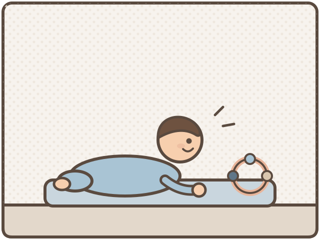
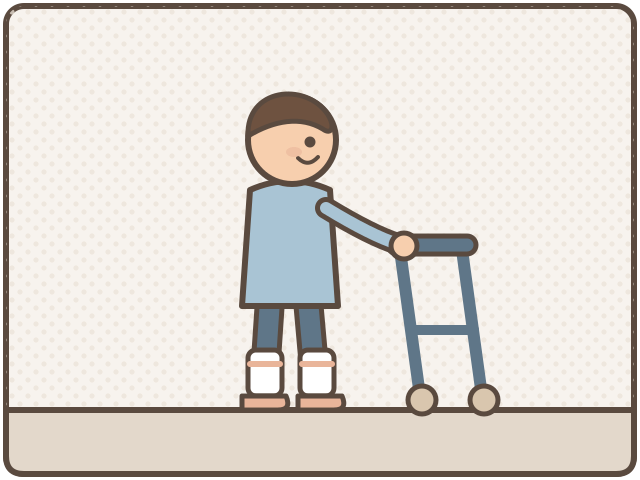
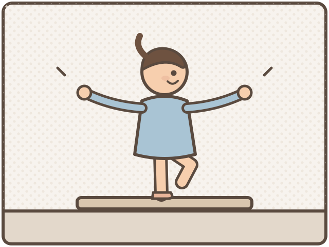
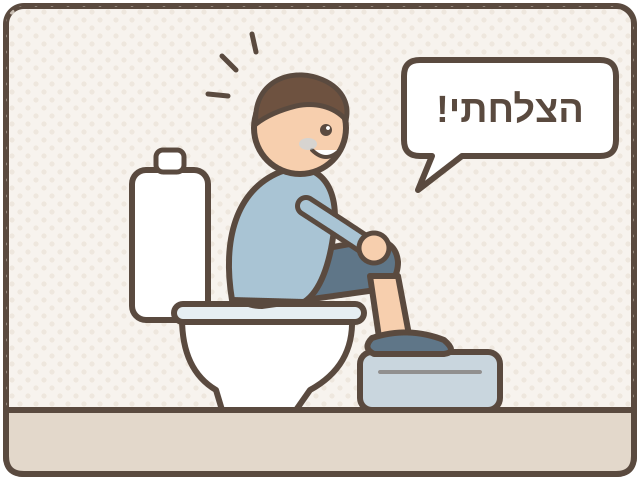
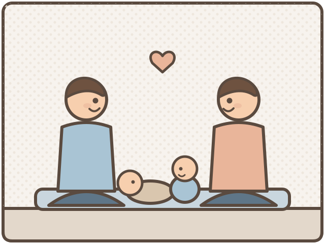
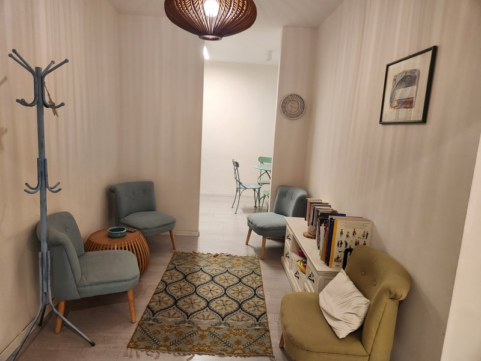
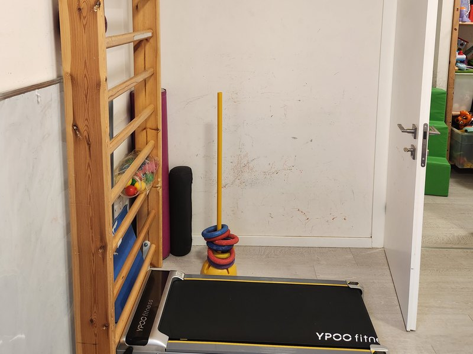

אלה רוזנטל
פיזיותרפיסטית נוירו-התפתחותית · הדרכת הורים · גישת גוף-נפש
קליניקה ברחובות
קצת עליי
פיזיותרפיסטית נוירו-התפתחותית עם 15 שנות ניסיון במכון להתפתחות הילד, במעון ובגן שיקומי ובמרפאה להפרעות תנועה בילדים. בעלת קליניקה פרטית ברחובות מזה 10 שנים. מדריכה סטודנטים, פיזיותרפיסטים וצוותי גן.
בוגרת לימודי הנחיית הורים, טיפול גוף-נפש בילדים והתמקדות, וקורס רצפת אגן בילדים.
הגישה שלי
גוף ונפש
בגישת הגוף-נפש אני מתייחסת לקשר בין תחושות הגוף והרגש לתנועה: מתח, חשש, מוסחות, קשב ועוד משפיעים על האופן שבו הילד זז, ותנועה ונשימה משפיעות בחזרה על תחושת הרוגע והביטחון שלו. בעזרת כלים מתוך לימודי גוף-נפש, התמקדות (Focusing) ומיינדפולנס, הילד לומד לזהות תחושות בגוף, להבין מה הוא צריך ולהקשיב לעצמו. כשהטיפול נחווה כחוויה חיובית, נוצרת מוטיבציה פנימית, והשינוי נשמר גם מחוץ לקליניקה.
התגייסות הילד והמשפחה
מטרות הטיפול נקבעות עם ההורים, וכשאפשר גם עם הילד. ההורים הם השותפים המרכזיים שלי בתהליך: הם מכירים את הילד הכי טוב ונמצאים איתו רוב הזמן. לכן בכל מפגש אני מסבירה ומדגימה מה אנחנו עושים ולמה, כדי שההורים ירגישו בטוחים להמשיך בבית. אני שואפת שהתרגול ישתלב בשגרה הביתית, במשחק, ברחצה, בהלבשה או ביציאה לגינה, ולא יתווסף אליה כמשימה נוספת. כשהילד שותף לבחירת הפעילות ומבין את מטרתה, הוא לוקח חלק פעיל בתהליך.
ראייה רב-תחומית
לאורך השנים אני עובדת בצמוד למרפאות בעיסוק, לקלינאיות תקשורת ולמטפלות רגשיות. העבודה המשותפת מובילה להפרייה הדדית ולהרחבה של יכולת ההסתכלות וההתערבות הטיפולית. אני מאמינה שכל מטפל בילדים הוא קודם כל מטפל התפתחותי, ומנקודת המבט הרחבה הזו אני מתבוננת ביכולות ובכוחות של הילד. בהתאם לכך אני עובדת בתיאום עם הצוות הפרא-רפואי ועם המסגרת החינוכית, ועוזרת להתאים את הסביבה ההתפתחותית או את הציוד השיקומי לפי הצורך. המטרה: השתתפות פעילה ועצמאות בבית, בגן ובבית הספר.
מקום להורות
הסביבה הביתית היא הסביבה הכי חשובה לילד. בתקופות מסוימות עולות אצל ההורים שאלות, חששות ולפעמים גם עומס. מתוך לימודי הנחיית הורים, אני נותנת מקום לחוויה ההורית, ויחדיו אנו מוצאים את הדרכים שתומכות בהתפתחותו של הילד ומחזקות את הביטחון שלכם כהורים.
ההורים שותפים בכל טיפול. בחלק מהתהליכים אני מציעה גם מפגשים עם ההורים בלבד, למשל בתחילת התהליך כחלק מההיכרות, או בנקודות משמעותיות לאורכו. אפשר גם לפנות אליי להדרכת הורים בלבד, גם בלי שאפגוש את הילד.

תחומי טיפול

תינוקות
העדפת צד או טורטיקוליס? קושי בשכיבה על הבטן, בהתהפכות, בזחילה או בהליכה?
מידע נוסף ←
ילדים בשיקום
שיתוק מוחין (CP), תסמונות ועיכוב התפתחותי משמעותי. טיפול שמעודד השתתפות ועצמאות.
מידע נוסף ←
יציבה וסרבול מוטורי
ילדים מסורבלים, עם קושי ביציבה, בשיווי משקל ובקואורדינציה.
מידע נוסף ←
רצפת אגן ילדים
הרטבת יום או לילה, עצירות, דליפת צואה, גמילה שלא מתקדמת.
מידע נוסף ←
קבוצות
קבוצות להורים ותינוקות וקבוצות יציבה לילדים.
מידע נוסף ←במהלך הטיפול של בני אצל אלה, גיליתי לא רק את הפן המקצועי שלה והאבחון החד של הבעיות והקשיים. גיליתי גם את הגישה המדהימה שלה לילדים והיכולת שלה ליצור קשר ולהתחבר לילד. היא הייתה בקשב תמידי לרצונות שלו והפכה את הטיפול למיוחד ומהנה. כל דקה במהלך טיפול אצל אלה מכוונת מטרה, אבל הכל נעשה בגמישות ותוך שינוי מתמיד בהתאם למצב. והכל נעשה תוך תקשורת גלויה מולי, תוך כדי הסבר והחלטות משותפות לגבי התכנית. זכינו להכיר את אלה ולהיות מטופלים אצלה!
יעל, רחובות · MedReviewsבתי מאובחנת עם עיכוב התפתחותי ומטופלת אצל אלה בהנאה גדולה מזה 9 חודשים. הגענו אחרי חוויות לא מוצלחות אצל מספר אנשי מקצוע, ומייד הרגשנו בהבדל!! מפגישה לפגישה אלה הצליחה ליצור התקדמות מדהימה… לקריאת ההמלצה המלאה
אמא, MedReviewsממליצים בחום על אלה רוזנטל, הגענו לאלה כשהיינו צריכים ליווי מקצועי, וקיבלנו מעטפת שלמה. אשת מקצוע מיומנת מאוד, יסודית וקשובה. הגישה שלה לילדים פשוט קסומה – היא מצליחה להפוך כל תרגיל לחוויה חיובית ומעצימה. אלה רגישה, נעימה ומשרה ביטחון רב גם על הילדים וגם עלינו כהורים. מעבר לידע המקצועי הרחב שלה, מה שבאמת מייחד אותה זו הרגישות יוצאת הדופן והיכולת לקרוא את הבן שלנו בכל רגע נתון. היא יודעת מתי לדחוף ומתי להכיל, ותמיד בחיוך ובמאור פנים. פיזיותרפיסטית מדהימה, אלה מומלצת בחום! 🙏
MedReviewsהגענו לאלה כשהבן שלי היה בן 7 חודשים בעקבות טונוס מוגבר. כבר מהמפגש הראשון הבנתי שהגעתי למקום הנכון. הגישה של אלה כל כך רכה, נעימה, קשובה וזורמת עם הילד. הוא לא מתחבר לזרים, אבל אלה פשוט ריככה אותו, והייתי בהלם איך הוא משתף פעולה ומשחק איתה בהנאה! השיפור ניכר כבר מהמפגש הראשון.
ליאורהגענו עם תינוקת פיצקית בת חודש והמון חששות בלב, וכבר במפגש הראשון קיבלנו תמיכה ועידוד ויצאנו עם המון כלים הביתה. אלה ליוותה אותנו במשך חודשים ותמיד עם חיוך, המון אהבה לקטנה לצד מקצועיות חסרת פשרות.
תאיראלה ליוותה את הבת שלי מגיל 9 חודשים עם המון סבלנות, רגישות ואכפתיות אמיתית… היום, בגיל שנה ו־8 חודשים, היא הולכת, מטפסת על סולמות ופורחת.
נטעהיינו אצל אלה עם בן שנה וחצי שבמשך חודש דישדש בהליכה… מהרגע שיצאנו מהמפגש הוא באמת התחיל ללכת, ותוך יומיים התחיל להעדיף הליכה על זחילה.
יעלהגעתי עם תינוק בן שלושה חודשים וחצי שלא שכב על הבטן יותר משתי דקות. תוך כמה ימים הוא כבר שכב על הבטן 20–30 דקות ושיחק בהנאה.
עדיההבנה של אלה היא לא רק של הפן המוטורי, אלא התפתחותית ורחבה. היא נתנה לנו כלים שעזרו מאוד, והכל באווירה נעימה ומשחקית.
מאיהאיפה מתקיים הטיפול?
בקליניקה ברחובות
הטיפולים מתקיימים בקליניקה נעימה ברחובות, המאובזרת בציוד חדיש. בקליניקה יש גם מטבח, שבו אפשר לתרגל מיומנויות יומיומיות בסביבה טבעית, פינת המתנה נוחה להורים וחדר נפרד להדרכת הורים, ללא נוכחות הילד. לעיתים אני מגיעה גם לביקור בית, למשל להתאמת סביבה וציוד. בנוסף אני מעבירה סדנאות והדרכות הורים אונליין.
- מפגש של 50 דקות
- תרגילים לבית וקשר רציף בין המפגשים
- אפשר לקבל החזר מביטוח פרטי בהתאם לפוליסה, ומקופות החולים בהתאם לנהלים שלהן




יצירת קשר
הדרך הטובה ביותר להגיע אליי היא בהודעה. כתבו כמה מילים על הילד ואחזור אליכם.